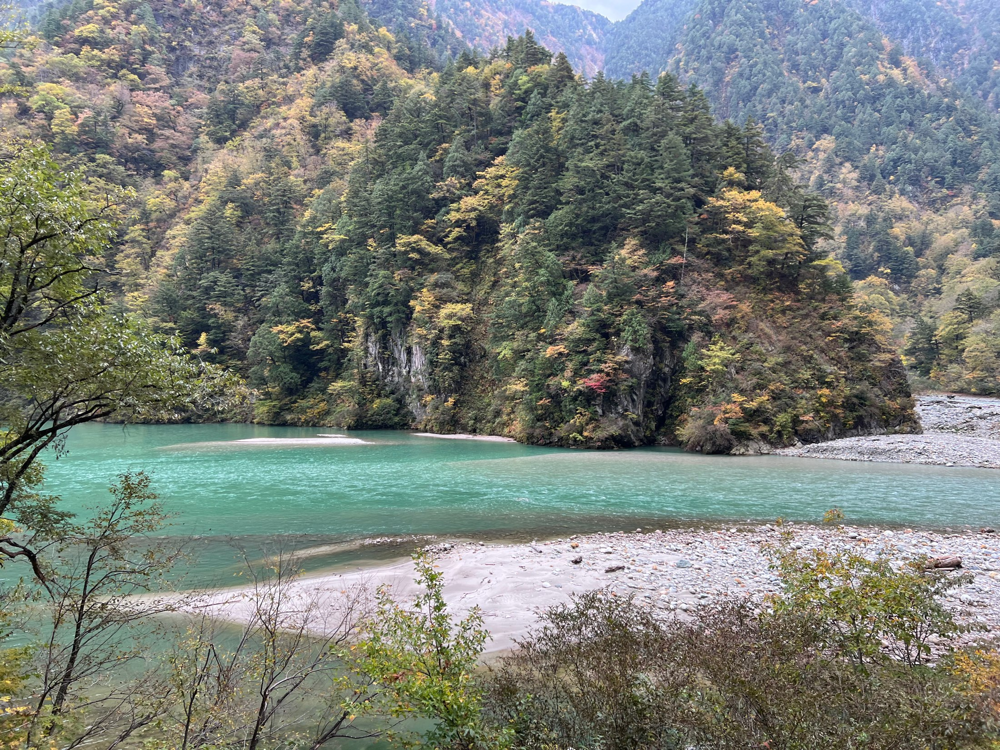

DAY 03 / THE COLOURS ALONG THE RIVER
山的秋色，
從水裡開始。
這一天，最先記住的是水的顏色。晴光裡的青綠，沿著山谷轉彎；車窗外，杉林與黃葉交錯，紅橋從岩壁間伸出。等到回程，天空漸漸收起藍色，山與水又換了一副表情。
從 176 個影像檔精選 30 張風景照片，依原檔拍攝時間串成五章。點擊照片可看完整畫幅；手機可左右滑動切換。章節依影像內容編排。
THE JOURNEY IN MOTION / 旅途短片
讓風景，再流動一次。
從紅橋與青綠湖水，到鐵道旁的秋山與杉林。
用一段輕柔旋律，重回車窗邊的那一天。
約 1 分 26 秒 · 輕柔配樂與現場聲
下載影片 ↓FIVE CHAPTERS / 一日影像索引
沿著水色，把這一天重走一遍。
UNAZUKI / THE FIRST COLOUR
宇奈月，晴光裡的青綠
藍天把山的輪廓照得清楚。水面轉過一道彎，紅橋與兩岸的樹，把這一天的第一種顏色留了下來。
河水先替旅程轉彎
青綠的水沿著山腳轉彎，岸邊的屋舍安靜地靠著山。
山色從綠開始
杉林與落葉樹在山坡交錯，細小的黃與橙藏在大片綠意裡。
紅色弧線，跨過湖面
紅橋在水面上畫出一道弧，遠山與白雲留出明亮的背景。
車窗外的一池光
青色水面在秋山前展開，兩岸枝葉為湖光添上層次。
向山的褶皺裡看
兩道山稜往深處收攏，近岸樹影與遠方雲影層層疊起。
THE TRAIN WINDOW / INTO THE GORGE
把風景，交給車窗
車窗是一幅不停更換的畫。橋、岩壁、林間的黃葉與山裡的工程，一段段經過眼前，沿著水色將旅程慢慢串起。
橋落在山谷之間
深色橋梁橫過陡峭的谷地，後方的山在雲下展開。
林間亮起一點黃
近處葉片被光照亮，遠山退成一層柔軟的深綠。
岩壁上的樹
樹木沿著岩面的裂隙生長，把堅硬山壁染出細密層次。
山裡的幾何線條
壩體與管線沿著山勢排列，直線和山的曲線在此相遇。
山稜向天空張開
林木讓出一個開口，鋸齒般的遠山露出完整輪廓。
白石之間，一條青綠
河水從白色礫石旁穿過，把視線一路引向雲下的山。
RIVER & FOREST / LAYERS OF AUTUMN
沿著水，讀一座山
溪水時而急促，時而緩下來。透過細枝、穿過杉林，再看見一整片青綠，秋天的層次便不只停在葉子上。
枝葉之間的河
把河水放在枝葉後面，眼前多了近與遠的距離。
杉林的一瞬
筆直樹幹排列在窗外，光從縫隙中穿過。
河道向遠方打開
灰白河床、青色溪水與兩岸山坡，連成一條寬闊的通道。
鐵道旁的綠意
細枝、藤葉與林間光影，在山腰交織成一片綠意。
抬頭，是山的另一面
從近處黃綠一路看到遠方峰頂，秋色有了垂直的深度。
山谷盛著一灣青綠
河水在石灘前緩下來，深綠杉林與零星秋葉映出這一天最鮮明的顏色。
A PAUSE / BRIDGES & DEPTH
停下來，讓峽谷變大
視線從車窗移開，山谷便展開得更深。紅橋、石壁與細長溪流，讓原本抽象的高度，成為可以望見的距離。
一座橋下的深處
從橋邊往谷底看，水流縮成一道細亮的線。
山腰上的紅色路徑
紅橋穿過山坡，在樹木與岩壁間留下清楚的方向。
向谷底望去
兩側山壁收攏，白色水流在深處連接著前後景。
雲影之下，抬頭看山
白雲從峰頂經過，仰角讓山壁顯得更高、更近。
把紅橋留在秋山裡
一條紅色斜線跨過谷地，藍天、白雲與黃綠山林共同留在這一刻。
THE WAY BACK / UNDER CHANGING SKIES
回程，換了一種天色
午後雲漸漸厚了，同一條水也換了顏色。沿著鐵道回望，灰綠的山、淡青的湖和最後一座紅橋，替旅程慢慢收尾。
午後的雲，低了一點
河道仍然明亮，山頭卻已罩上一層柔灰的光。
同一條河，另一種光
兩岸秋色在陰天下變得柔和，水面仍帶著青綠。
軌道轉向下一站
碎石間的鐵軌向前延伸，線條交會處留下旅途的方向。
回望山坡的顏色
斑駁的黃綠散在岩壁上，秋色沿著陡峭山勢向上展開。
山裡的直線
層層結構沿著山坡延伸，在樹木間形成另一種秩序。
水流從森林中出現
一小段青綠從樹梢間露出，遠山已退成灰色。
湖畔的灰色小塔
圓柱形建築立在淡青水邊，深色雲影落在後方山坡。
再一次遇見紅橋
回程的天光變了，紅橋仍在湖面上，替這一天畫下熟悉的弧線。
UNTIL THE NEXT JOURNEY